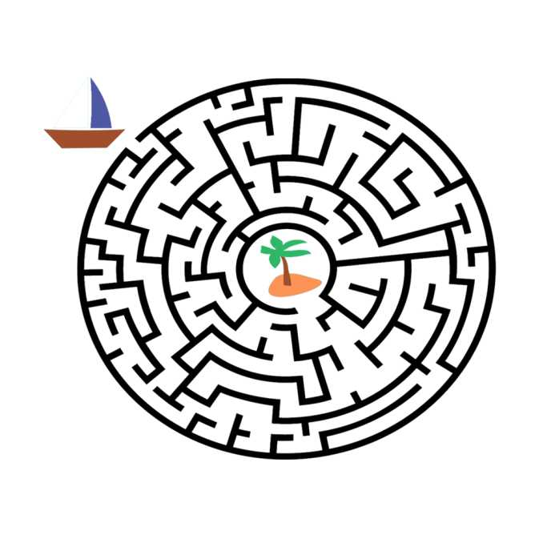
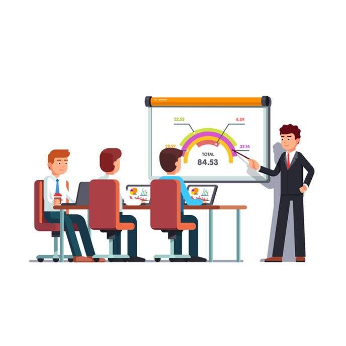
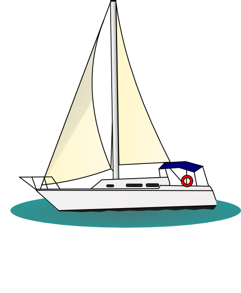
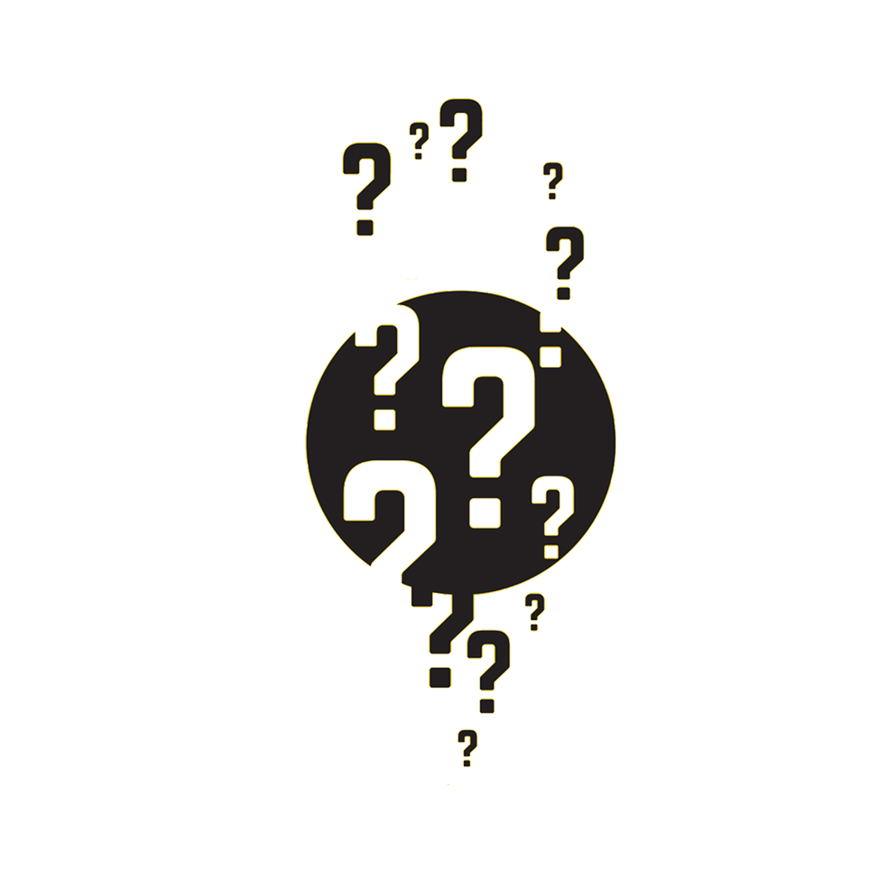
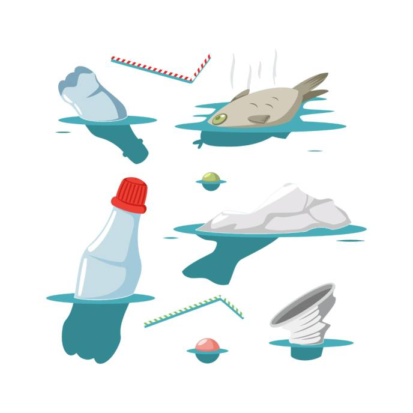

||Results of events||
Oceanic Maze

Final Standing:
1. IMUV 2.0 (IMU Vizag)
2. Twin Magic (IMU Vizag)
3. Vallam (IMU Vizag)
Paper Presentation

Final Standing:
1. 8 Littoral Mines (IMU KOLKATA)
2. 15 SS@6 (HIMT)
3. 10 Mango (IMU VIZAG)
BOAT EXPO

Final Standing:
1. 5 VALLAM (IMU VIZAG)
2. J JAISON, AMBAREESH M S (IMU VIZAG)
3. DESTINY (IMU VIZAG)
InnoTech

Final Standing:
1. Amandeep Singh (IIT KGP)
2. Atharv Choukse, Aditya Mallick (IIT KGP)
3. Shubham Thakur (IMU Mumbai)
Case Study

Final Standing:
1. AMULYA RAJ SINGH, PIYUSH SRIVASTAVA, MD. NADIR MOIZ, MD. FARAHAN AQDUS (IMU Kolkata)
2. SHASHWAT DROLIA (IIT KGP)
3. PARAM SHARMA, AARYAN, NIKHIL KARPATNE (IMU Mumbai)
Oceania Quiz

Final Standing:
1. Team Pirates (IMU Vizag)
2. Team Delta (IMU Vizag)
3. Team IMUV 2.0 (IMU Vizag)
Clean the pool

Final Standing:
1. Team Delta (IMU Vizag)
2. Twin Magic (IMU Vizag)
3. IMUV 2.0 (IMU Vizag)